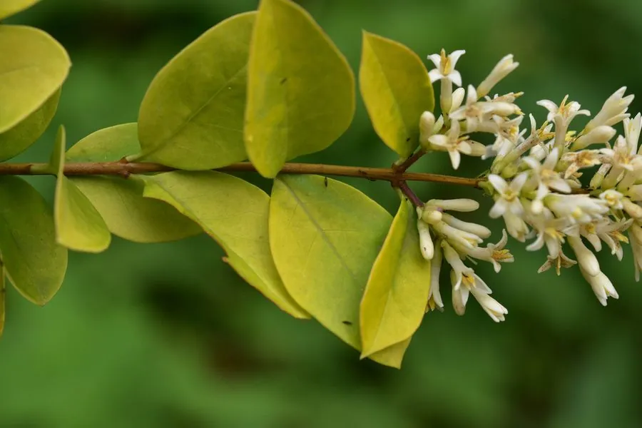

灌木与花木 · 植物界
金叶女贞 Ligustrum × vicaryi

木犀科半常绿灌木，叶片金黄色，耐修剪，是城市绿化中常见的彩叶绿篱材料，由金边女贞与欧洲女贞杂交而成。
- 分类
- 门被子植物门纲木兰纲目唇形目科木犀科属女贞属
- 栖息环境
- 城市绿地、道路绿篱与庭院，喜光也耐半阴
- 地理分布
- 原产欧洲；中国各地园林广泛栽培
- 保护级别
- 暂无评估；栽培杂交种，未见野生居群
物种志
金叶女贞为木犀科女贞属半常绿灌木，是金边女贞与欧洲女贞的杂交种，高 1–2 米，枝条细密。叶对生，卵形至椭圆形，新叶金黄色，老叶黄绿色，全缘。圆锥花序顶生，花小，白色，花期 5–6 月；果实为核果，椭圆形，成熟时紫黑色，果期 8–10 月。
金叶女贞原产欧洲，中国各地园林广泛栽培，喜光，也耐半阴，耐寒性一般，适宜疏松肥沃、排水良好的土壤。它叶色金黄、耐修剪，是城市绿化中常见的彩叶绿篱材料，常与紫叶小檗、红叶石楠等配植成色块。栽培以扦插繁殖为主，需定期修剪以保持叶色鲜艳；光照不足时叶片易转绿，冬季寒冷地区可能出现落叶。
形态与习性
- 株高1–2 米，枝条细密
- 叶色新叶金黄，老叶黄绿色
- 花期5–6 月，花小、白色
- 果期8–10 月，核果紫黑色
- 光照喜光，光照足叶色更艳
- 水分喜湿润，忌积水
- 主要用途彩叶绿篱、色块与道路绿化
趣味知识
- 金叶女贞是金边女贞与欧洲女贞的杂交种。
- 它的新叶呈金黄色，是城市色块绿化中最常用的材料之一。
- 光照不足时叶片会转绿，因此需种在阳光充足处。
- 耐修剪，每年修剪数次可保持绿篱整齐、叶色鲜艳。